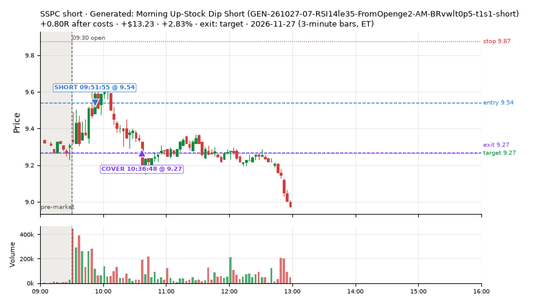
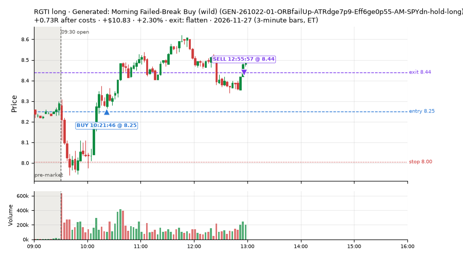
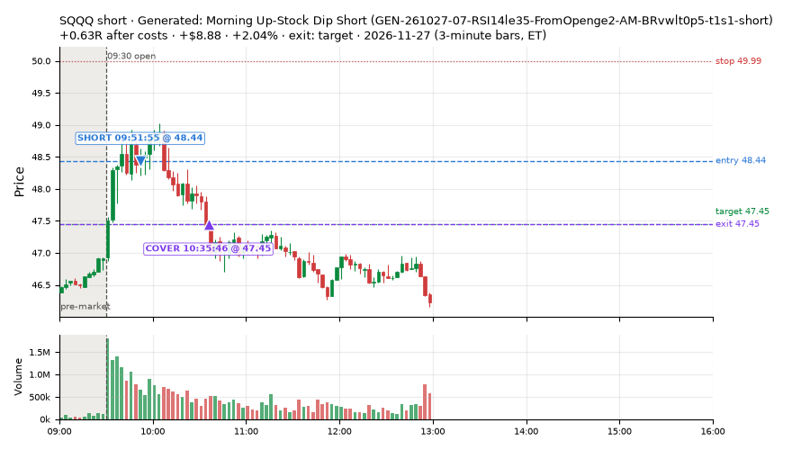
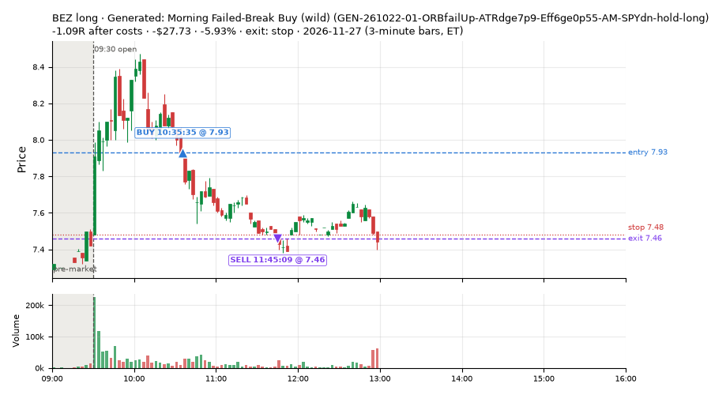
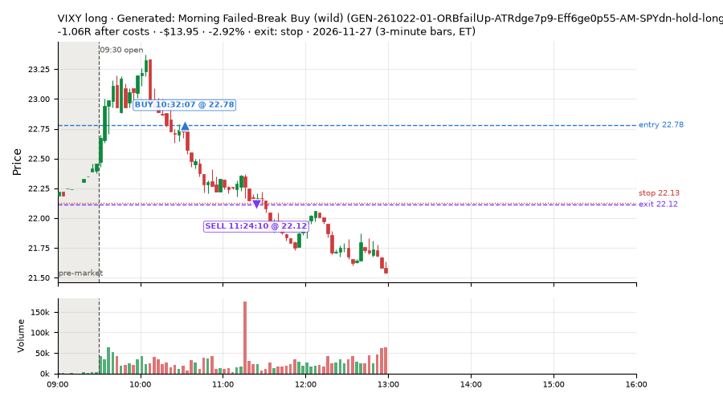
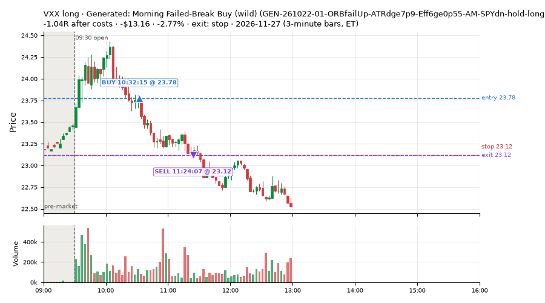
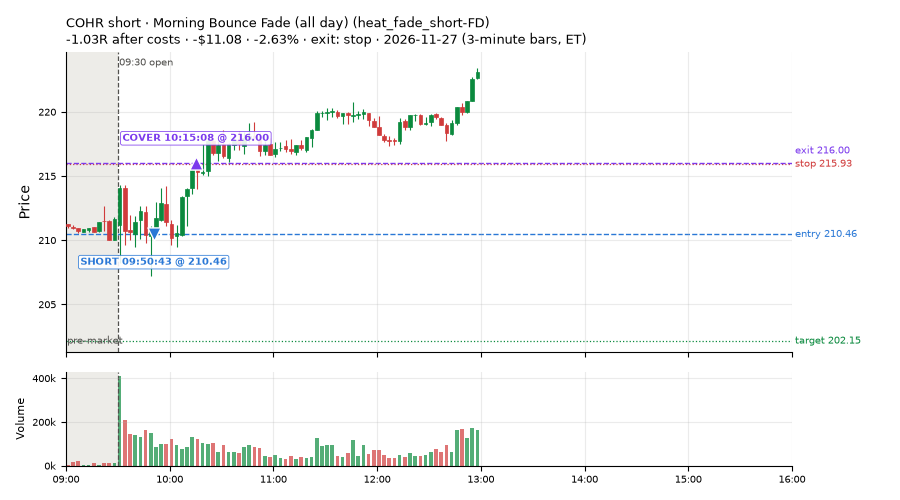
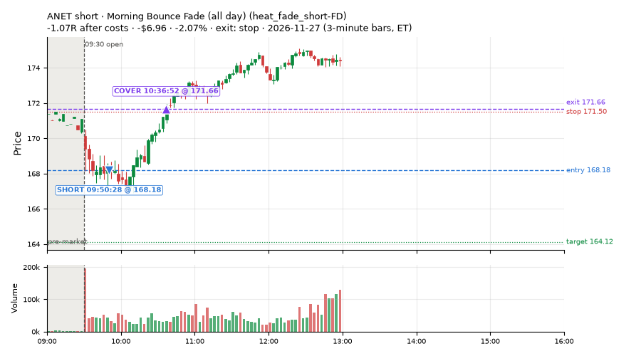

182 trades · win rate 56% · P/L $-35.89
PROBATION: no live setup has passed both locked test periods. 10 owner-directed setups added 2026-10-08 (MarcoFlow top 5 + 5 new), untested live. RW6G1 (RW6 + VWAP band guard) added 2026-10-09, probation.

| Symbol | Setup | Side | In | Out | Entry | Exit | Exit reason | % gained | P/L |
|---|---|---|---|---|---|---|---|---|---|
| SSPC | Generated: Morning Up-Stock Dip Short (GEN-261027-07-RSI14le35-FromOpenge2-AM-BRvwlt0p5-t1s1-short) | short | 09:51 | 10:36 | 9.54 | 9.27 | target | +2.83% | $13.23 |
| RGTI | Generated: Morning Failed-Break Buy (wild) (GEN-261022-01-ORBfailUp-ATRdge7p9-Eff6ge0p55-AM-SPYdn-hold-long) | long | 10:21 | 12:55 | 8.25 | 8.44 | flatten | +2.30% | $10.83 |
| SQQQ | Generated: Morning Up-Stock Dip Short (GEN-261027-07-RSI14le35-FromOpenge2-AM-BRvwlt0p5-t1s1-short) | short | 09:51 | 10:35 | 48.44 | 47.45 | target | +2.04% | $8.88 |
| Symbol | Setup | Side | In | Out | Entry | Exit | Exit reason | % lost | P/L |
|---|---|---|---|---|---|---|---|---|---|
| BEZ | GEN-261022-01-ORBfailUp-ATRdge7p9-Eff6ge0p55-AM-SPYdn-hold-long | long | 10:35 | 11:45 | 7.93 | 7.46 | stop | -5.93% | $-27.73 |
| VIXY | GEN-261022-01-ORBfailUp-ATRdge7p9-Eff6ge0p55-AM-SPYdn-hold-long | long | 10:32 | 11:24 | 22.78 | 22.12 | stop | -2.92% | $-13.95 |
| VXX | GEN-261022-01-ORBfailUp-ATRdge7p9-Eff6ge0p55-AM-SPYdn-hold-long | long | 10:32 | 11:24 | 23.78 | 23.12 | stop | -2.77% | $-13.16 |
| COHR | heat_fade_short-FD | short | 09:50 | 10:15 | 210.46 | 216.00 | stop | -2.63% | $-11.08 |
| ANET | heat_fade_short-FD | short | 09:50 | 10:36 | 168.18 | 171.66 | stop | -2.07% | $-6.96 |








Signal to fill: median 1s, 90th percentile 3s (182 trades). Bars close each minute; the order follows the bar close.
Best excursion (MFE): median 0.43R; worst (MAE) median 0.42R. 24% of trades never got +0.25R in our favour; 1 reached +1R and still closed at or below 0.
| Symbol | Setup | Best R | Worst R | Closed R |
|---|---|---|---|---|
| GE | heat_fade_short-FD | +0.75 | -1.01 | -1.11 |
| GDXJ | heat_fade_short-FD | +0.77 | -1.02 | -1.06 |
| NET | heat_fade_short-FD | +0.76 | -1.01 | -1.04 |
| FTNT | heat_fade_short-FD | +0.70 | -1.02 | -1.10 |
| GDX | heat_fade_short-FD | +0.74 | -1.02 | -1.05 |
| Entry time | Trades | Win | Avg R | P/L |
|---|---|---|---|---|
| 09:50-10:30 | 89 | 63% | -0.05 | $42.61 |
| 10:30-11:30 | 59 | 58% | -0.04 | $-45.70 |
| 11:30-13:00 | 34 | 35% | -0.14 | $-32.80 |
| Setup | Trades | Win | Avg R after costs | Adj R (net of SPY) | Avg R ex-market (all sessions) | P/L |
|---|---|---|---|---|---|---|
| Failed Opening-Range-Low Break Long (0.05 ATR) [fill] (CWT14-failbrk-orl-p05-long) | 97.0 | 76% | +0.19 | -0.16 | -0.10 (beta +0.67, n 1222) | $109.54 |
| Generated: Morning RSI Surge Buy (GEN-261020-07-RSIslopege19-LowWickge0p33-ATRdge4p4-AM-BRvwgt0p7-hold-long) | 7.0 | 57% | +0.06 | -0.03 | -0.08 (beta +0.85, n 37) | $8.00 |
| Generated: Morning Failed-Break Buy (wild) (GEN-261022-01-ORBfailUp-ATRdge7p9-Eff6ge0p55-AM-SPYdn-hold-long) | 8.0 | 38% | -0.38 | -0.49 | +0.02 (beta +0.68, n 150) | $-48.67 |
| Generated: Morning Up-Stock Dip Short (GEN-261027-07-RSI14le35-FromOpenge2-AM-BRvwlt0p5-t1s1-short) | 2.0 | 100% | +0.72 | +0.82 | – | $22.11 |
| Sellers into Strength (all day) (MF5-flowsell-vwapup-rsi5hi) owner-directed; holdouts once: Sep-Oct -0.001R n264, Apr-Jun -0.010R n1199 | 15.0 | 40% | -0.19 | +0.25 | -0.05 (beta -0.43, n 61) | $-10.13 |
| Big Gainer Average Reclaim Fade (all day) (NS2-sma50break-overbought-short-FD) | 1.0 | 100% | +0.09 | +0.13 | -0.08 (beta -1.08, n 246) | $0.55 |
| Opening-Range Breakdown Buy (all day) (ST1-ordn-long-pm-t05s1-FD) | 4.0 | 100% | +0.73 | +0.58 | -0.04 (beta +0.83, n 63) | $19.16 |
| EMA Cross-Down Dip Buy (all day) (ST4-emadn-long-am-t1s05-FD) | 1.0 | 100% | +0.85 | +0.44 | +0.57 (beta +2.46, n 24) | $3.00 |
| Afternoon Blow-off Short (all day) (exhaustion_short-FD) | 17.0 | 35% | -0.10 | -0.11 | -0.10 (beta -0.55, n 110) | $-13.68 |
| Morning Bounce Fade (all day) (heat_fade_short-FD) | 30.0 | 3% | -0.95 | -0.48 | -0.22 (beta -0.89, n 560) | $-125.77 |
Market direction (SPY, beta 1) accounted for $63.70 of today's $-35.89; the rest ($-99.59) came from the setups themselves. Avg R net of SPY: -0.15 (incl. a hedge leg's cost; report only).
36 setups live today. Today: 516 signals, 182 taken, 3 lost because another setup held the symbol (1%). Since 2026-10-21 (27 sessions): 36365 signals, 11420 taken, 1454 lost to other setups (4%). Peak open positions today 86 of 300 slots. Earnings blackout removed 138 symbols before scanning.
Simulated playing time (not live): 24887 what-if trades of signals not taken, avg -0.05R, 54% winners; of them 1453 lost to another setup (avg -0.03R).
Silent: GEN-261029-08-Ret15mlem0p36-Flow3lem0p54-RSI14ge65-AM-SPYgt0p5-hold-short, GEN-261022-06-NewLOD-ORBfailUp-BuyPresslem0p49-PM-SPYltm0p5-t1s1-long, GEN-261027-06-ORBfailUp-BarsSinceLODle5-MID-BRoplt0p35-holdtr-long, GEN-261028-02-VWAPxDn-NewLOD-AM-QQQgt0p6-t1s1-long, GEN-261020-02-RSIslopelem19-BarRngATRge0p14-BuyPressge0p17-LATE-BRvwgt0p7-t05s1-short, GEN-261021-08-RSI2le0-Ret15mATRge0p16-ATRdge3p6-LUNCH-QQQgt0p6-holdtr-long, GEN-POD1022-01-thrasher-breadth-thrust-stocks-holdtr-long, GEN-261023-01-VWAPxUp-VWAPatrge0p33-LAM-SPYgt0p5-t05s05-short, GEN-261020-03-MACDhge0p079-BarsSinceLODle5-MID-BRvwlt0p3-t05s05-long, GEN-261029-10-RSIslopege19-Ret5mlem0p21-EMAdiffge0p29-OPEN-BRvwgt0p5-t1s1-short, GEN-261029-05-BearDiv-RSI14ge78-Compress6le0p091-AM-BRopgt0p5-t05s05-long · Crowded out: NS2-sma50break-overbought-short, NM-RWR1-exh150-gapdn-spyup-pm-short · Starved: intraday_momentum, heat_fade_short-FD, heat_fade_long-FD, MF1-945-flowsell-vwapup-FD, heat_fade_long
| Prio | Setup | Today sig / taken | Sessions | Signals / taken / trades | Taken/day | Expected/day | Lost to other setups | Lost to (setup n) | Top skip reasons | SIMULATED: not-taken n / avg R / win | Verdict |
|---|---|---|---|---|---|---|---|---|---|---|---|
| 1 | Opening-Range Breakdown Buy (all day) ST1-ordn-long-pm-t05s1-FD | 7 / 4 | 27 | 108 / 63 / 63 | 2.33 | 3.49 | 2 | heat_fade_short-FD 1, NS3-failed-vwap-reclaim-short-FD 1 | spread / quote / size 30, daily loss cap 7, slots full 3 | 45 / -0.02R / 56% | slow 11.7 entries/week; ~5 weeks to 60 trades |
| 2 | Big Gainer Average Reclaim Fade NS2-sma50break-overbought-short | 2 / 0 | 27 | 306 / 41 / 41 | 1.52 | 5.74 | 129 | NS2-sma50break-overbought-short-FD 115, RW6-ns2-up3-short-FD 56, CWT12-coil-k4-long 10 | symbol held by another setup 129, spread / quote / size 76, not shortable / shorts off 38 | 265 / +0.36R / 74% | crowded-out 129 of 306 signals (42%) lost to setups already holding the symbol |
| 3 | Failed Opening-Range-Low Break Long (0.05 ATR) [fill] CWT14-failbrk-orl-p05-long | 183 / 97 | 22 | 4279 / 1222 / 1222 | 55.55 | – | 209 | CWT14-failbrk-orl-p10-lowvol-long 165, CWT14-failbrk-orl-p10-long 164, CWT14-failbrk-orl-p05-lowvol-long 162 | daily loss cap 1691, spread / quote / size 592, per-setup cap 325 | 3051 / -0.07R / 60% | ok 277.7 entries/week |
| 4 | Big Gainer Fade, VWAP Band Guard (all day) RW6G1-ns2-up3-vwap2sd-short-FD | 1 / 0 | 17 | 109 / 50 / 50 | 2.94 | 3.73 | 4 | RW6-ns2-up3-short-FD 3, NS2-sma50break-overbought-short-FD 2, RW6G1-ns2-up3-vwap2sd-short-FD 2 | not shortable / shorts off 43, symbol held by another setup 4, spread / quote / size 4 | 59 / +0.14R / 61% | slow 14.7 entries/week; ~4 weeks to 60 trades |
| 5 | Afternoon Blow-off Short (all day) exhaustion_short-FD | 20 / 17 | 6 | 486 / 110 / 110 | 18.33 | 64.64 | 6 | GEN-261027-05-VolRatioge1p5-ORLdistge0p41-ATRdge6-MID-BRvwgt0p7-t05s1-long 3, GEN-261022-01-ORBfailUp-ATRdge7p9-Eff6ge0p55-AM-SPYdn-hold-long 3 | daily loss cap 262, other 47, not shortable / shorts off 39 | 376 / -0.52R / 20% | ok 91.7 entries/week |
| 6 | Sellers into Strength (all day) MF5-flowsell-vwapup-rsi5hi | 19 / 15 | 6 | 110 / 61 / 61 | 10.17 | 15.47 | 11 | MF5-flowsell-vwapup-rsi5hi-FD 10, MF3-open-flowsell-rsi5hi-FD 5, MF1-945-flowsell-vwapup-FD 2 | spread / quote / size 27, symbol held by another setup 11, daily loss cap 7 | 49 / +0.14R / 59% | ok 50.8 entries/week |
| 7 | Index Last-Half-Hour Momentum intraday_momentum | 0 / 0 | 4 | 12 / 2 / 2 | 0.50 | 2.37 | 1 | MF5-flowsell-vwapup-rsi5hi 1 | spread / quote / size 9, symbol held by another setup 1 | 10 / -0.39R / 10% | starved 0.50 entries/day vs ~2.37 expected |
| 8 | Stretched Above VWAP Fade (far) CWT13-vwapstretch-z075-short | 1 / 0 | 4 | 171 / 7 / 7 | 1.75 | – | 0 | – | daily loss cap 151, spread / quote / size 8, not shortable / shorts off 5 | 164 / -0.31R / 26% | slow 8.8 entries/week; ~7 weeks to 60 trades |
| 9 | Failed Prior-Day-Low Break, SPY-Range Regime (short leg) CWT14-failbrk-pdl-p05-R2A-short | 0 / 0 | 4 | 206 / 72 / 72 | 18.00 | – | 1 | GEN-261026-10-ORBfailDn-EMAdChglem0p051-PM-BRopgt0p65-t1s1-long 1 | spread / quote / size 77, daily loss cap 53, not shortable / shorts off 2 | 134 / -0.14R / 57% | ok 90.0 entries/week |
| 10 | Generated: PM Sharp-Drop Buy (in uptrend) GEN-261019-03-Ret15mATRlem0p12-FromOpenATRlem0p34-SMA20slopege0p29-PM-BRoplt0p5-t05s1-long | 0 / 0 | 4 | 3 / 3 / 3 | 0.75 | – | 0 | – | – | 0 / – | slow 3.8 entries/week; ~16 weeks to 60 trades |
| 11 | Generated: Morning Weak-Bounce Short (quiet) GEN-261022-08-EMAdChglem0p094-Flow3ge1-RVolDayle0p59-AM-SPYgt0p25-holdtr-short | 0 / 0 | 4 | 36 / 24 / 24 | 6.00 | – | 0 | – | spread / quote / size 10, not shortable / shorts off 2 | 12 / +0.62R / 92% | ok 30.0 entries/week |
| 12 | Generated: PM Prior-High Dip Buy (QQQ down) GEN-261023-04-EMAdChglem0p028-PDHdistle0p074-EMAdifflem0p46-PM-QQQltm0p6-t1s1-long | 0 / 0 | 1 | 0 / 0 / 0 | 0.00 | – | 0 | – | – | 0 / – | quiet - wait no signals in 1 session(s); too early to tell |
| 13 | Generated: Late-AM New-Low Buy (SPY up) GEN-261027-03-NewLOD-DayPosle0p19-SMA20dlem0p59-LAM-SPYgt0p5-hold-long | 0 / 0 | 1 | 0 / 0 / 0 | 0.00 | – | 0 | – | – | 0 / – | quiet - wait no signals in 1 session(s); too early to tell |
| 14 | Generated: Morning Up-Stock Dip Short GEN-261027-07-RSI14le35-FromOpenge2-AM-BRvwlt0p5-t1s1-short | 21 / 2 | 1 | 21 / 2 / 2 | 2.00 | – | 0 | – | not shortable / shorts off 19 | 19 / +0.81R / 95% | slow 10.0 entries/week; ~6 weeks to 60 trades |
| 15 | EMA Cross-Down Dip Buy (all day) ST4-emadn-long-am-t1s05-FD | 1 / 1 | 8 | 33 / 24 / 24 | 3.00 | 2.77 | 1 | heat_fade_short-FD 1 | spread / quote / size 7, symbol held by another setup 1, broker rejected 1 | 9 / +0.55R / 56% | ok 15.0 entries/week |
| 16 | Big Gainer Average Reclaim Fade (all day) NS2-sma50break-overbought-short-FD | 4 / 1 | 22 | 572 / 246 / 246 | 11.18 | 17.08 | 33 | CWT12-coil-k4-long 11, NS2-sma50break-overbought-short 11, CWT12-coil-k6-long 5 | spread / quote / size 85, not shortable / shorts off 78, daily loss cap 68 | 326 / -0.00R / 56% | ok 55.9 entries/week |
| 17 | Morning Bounce Fade (all day) heat_fade_short-FD | 235 / 30 | 22 | 2213 / 560 / 560 | 25.45 | 173.78 | 342 | heat_fade_short 254, LIQ-orl-sweep-open15-s25-long 20, CWT14-failbrk-orl-p05-long 17 | daily loss cap 710, symbol held by another setup 342, spread / quote / size 289 | 1653 / -0.15R / 42% | starved 25.45 entries/day vs ~173.78 expected |
| 18 | Generated: Morning Overbought Drop Short GEN-261029-08-Ret15mlem0p36-Flow3lem0p54-RSI14ge65-AM-SPYgt0p5-hold-short | 0 / 0 | 4 | 0 / 0 / 0 | 0.00 | – | 0 | – | – | 0 / – | silent no signals in 4 session(s); no expected rate on file |
| 19 | Generated: Morning RSI Surge Buy GEN-261020-07-RSIslopege19-LowWickge0p33-ATRdge4p4-AM-BRvwgt0p7-hold-long | 9 / 7 | 5 | 71 / 37 / 37 | 7.40 | – | 2 | NS2-sma50break-overbought-short 1, CWT14-failbrk-pdl-p05-R2A-short 1 | spread / quote / size 32, symbol held by another setup 2 | 34 / +0.73R / 47% | ok 37.0 entries/week |
| 20 | Generated: Morning Failed-Break Buy (wild) GEN-261022-01-ORBfailUp-ATRdge7p9-Eff6ge0p55-AM-SPYdn-hold-long | 13 / 8 | 5 | 360 / 150 / 150 | 30.00 | – | 2 | MF4-h40-open-flowsell-FD 1, RW3S-gapdn-flowsell-short-FD 1 | spread / quote / size 143, other 53, daily loss cap 10 | 210 / +0.61R / 50% | ok 150.0 entries/week |
| 21 | Generated: PM New-Low Buy (failed breakout) GEN-261022-06-NewLOD-ORBfailUp-BuyPresslem0p49-PM-SPYltm0p5-t1s1-long | 0 / 0 | 4 | 0 / 0 / 0 | 0.00 | – | 0 | – | – | 0 / – | silent no signals in 4 session(s); no expected rate on file |
| 22 | Generated: Late-AM Gap-Up Failed-Break Short GEN-261027-09-ORBfailDn-Gapge2-Slope6ge0p03-LAM-BRvwlt0p5-t05s05-short | 0 / 0 | 4 | 22 / 1 / 1 | 0.25 | – | 0 | – | not shortable / shorts off 21 | 21 / +0.90R / 95% | slow 1.2 entries/week; ~48 weeks to 60 trades |
| 23 | Generated: Midday Failed-Breakout Low Buy GEN-261027-06-ORBfailUp-BarsSinceLODle5-MID-BRoplt0p35-holdtr-long | 0 / 0 | 3 | 0 / 0 / 0 | 0.00 | – | 0 | – | – | 0 / – | silent no signals in 3 session(s); no expected rate on file |
| 24 | Stretched Below VWAP Bounce (far) CWT13-vwapstretch-z075-long | 0 / 0 | 1 | 0 / 0 / 0 | 0.00 | – | 0 | – | – | 0 / – | quiet - wait no signals in 1 session(s); too early to tell |
| 25 | Generated: Midday Oversold Buy (RSI < 22) GEN-261019-04-EMAdChgge0p15-RSI14le22-MID-BRoplt0p5-t1s1-long | 0 / 0 | 1 | 0 / 0 / 0 | 0.00 | – | 0 | – | – | 0 / – | quiet - wait no signals in 1 session(s); too early to tell |
| 26 | Generated: Late Volume-Spike Low Buy GEN-261026-02-VolRatioge2-SMA20dlem0p58-BarsSinceLODle1-LATE-BRoplt0p35-t1s1-long | 0 / 0 | 1 | 0 / 0 / 0 | 0.00 | – | 0 | – | – | 0 / – | quiet - wait no signals in 1 session(s); too early to tell |
| 27 | Generated: Late New-Low Buy (SPY down) GEN-261026-06-NewLOD-SMA20slopelem0p28-LATE-SPYltm0p25-t1s1-long | 0 / 0 | 1 | 0 / 0 / 0 | 0.00 | – | 0 | – | – | 0 / – | quiet - wait no signals in 1 session(s); too early to tell |
| 28 | Generated: PM Gap-Up Dip Buy (MACD falling) GEN-261029-03-MACDhlem0p12-Ret5mlem0p062-Gapge2-PM-QQQup-hold-long | 0 / 0 | 1 | 0 / 0 / 0 | 0.00 | – | 0 | – | – | 0 / – | quiet - wait no signals in 1 session(s); too early to tell |
| 29 | Generated: Open VWAP Reclaim Buy (down stock) GEN-261019-01-VWAPxUp-ATRdge3p6-FromPCATRlem0p68-OPEN-BRvwgt0p7-t05s05-long | 0 / 0 | 1 | 0 / 0 / 0 | 0.00 | – | 0 | – | – | 0 / – | quiet - wait no signals in 1 session(s); too early to tell |
| 30 | Generated: Midday Spike Fade (SPY down) GEN-261028-07-Z12ge1p6-Eff6le0p034-MID-SPYltm0p25-hold-short | 0 / 0 | 1 | 0 / 0 / 0 | 0.00 | – | 0 | – | – | 0 / – | quiet - wait no signals in 1 session(s); too early to tell |
| 31 | Generated: Lunch Failed-Breakdown Short GEN-261027-08-ORBfailDn-FromPCATRlem0p96-LUNCH-QQQltm0p6-hold-short | 0 / 0 | 1 | 0 / 0 / 0 | 0.00 | – | 0 | – | – | 0 / – | quiet - wait no signals in 1 session(s); too early to tell |
| 32 | Generated: Open Oversold Below-VWAP Short GEN-261023-03-RSI5le13-VWAPatrlem0p34-OPEN-BRvwgt0p6-holdtr-short | 0 / 0 | 1 | 0 / 0 / 0 | 0.00 | – | 0 | – | – | 0 / – | quiet - wait no signals in 1 session(s); too early to tell |
| 33 | Afternoon Exhaustion Short, Gap-Down, SPY Up (near-miss) NM-RWR1-exh150-gapdn-spyup-pm-short | 0 / 0 | 6 | 8 / 3 / 3 | 0.50 | – | 4 | GEN-261026-10-ORBfailDn-EMAdChglem0p051-PM-BRopgt0p65-t1s1-long 3, GEN-261020-01-MACDhge0p12-RSI5le25-PM-BRvwgt0p6-t1s05-long 1 | symbol held by another setup 4, spread / quote / size 1 | 5 / +0.28R / 80% | crowded-out 4 of 8 signals (50%) lost to setups already holding the symbol |
| 34 | Generated: PM Gap-Up New-Low Buy (SPY up) GEN-261027-02-NewLOD-RSI14le35-Gapge2-PM-SPYup-holdtr-long | 0 / 0 | 1 | 0 / 0 / 0 | 0.00 | – | 0 | – | – | 0 / – | quiet - wait no signals in 1 session(s); too early to tell |
| 35 | Generated: Late Volume Spike Buy (wide day) GEN-261019-07-VolRatioge2-UpWickge0p59-DayRngVsPrevge1p5-LATE-SPYgt0p5-t05s1-long | 0 / 0 | 1 | 0 / 0 / 0 | 0.00 | – | 0 | – | – | 0 / – | quiet - wait no signals in 1 session(s); too early to tell |
| 36 | Generated: PM VWAP Reclaim Buy (SPY up) GEN-261019-06-VWAPxUp-EMAdiffge0p29-PM-SPYgt0p5-holdtr-long | 0 / 0 | 1 | 0 / 0 / 0 | 0.00 | – | 0 | – | – | 0 / – | quiet - wait no signals in 1 session(s); too early to tell |
Every trade is attached as a CSV you can open and edit in Excel or Google Sheets. Live page: https://misiti15.github.io/MCF/live/